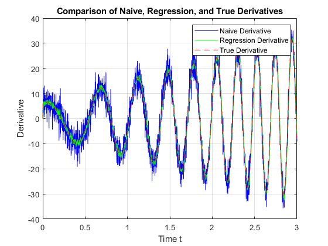

load('DataHW06_Prob3.mat');
L = length(t);
M = 5;
naive_derivative = zeros(size(y));
dt = t(2) - t(1);
for k = 2:L
naive_derivative(k) = (y(k) - y(k-1)) / dt;
end
regression_derivative = zeros(size(y));
for k = M:L
window_time = t(k-M+1:k);
window_y = y(k-M+1:k);
p = polyfit(window_time, window_y, 1);
regression_derivative(k) = p(1);
end
rmse_naive = sqrt(sum((naive_derivative - dy).^2) / L);
rmse_regression = sqrt(sum((regression_derivative - dy).^2) / L);
fprintf('RMSE for Naive Estimate: %.4f\n', rmse_naive);
fprintf('RMSE for Regression Model: %.4f\n', rmse_regression);
figure;
plot(t, naive_derivative, 'b', 'DisplayName', 'Naive Derivative');
hold on;
plot(t, regression_derivative, 'g', 'DisplayName', 'Regression Derivative');
plot(t, dy, 'r--', 'DisplayName', 'True Derivative');
xlabel('Time t');
ylabel('Derivative');
legend;
title('Comparison of Naive, Regression, and True Derivatives');
grid on;
hold off;
RMSE for Naive Estimate: 3.5854
RMSE for Regression Model: 1.5676
